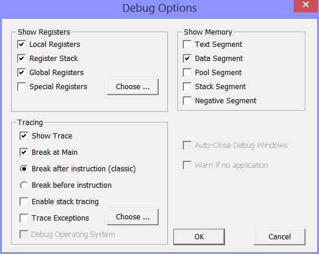
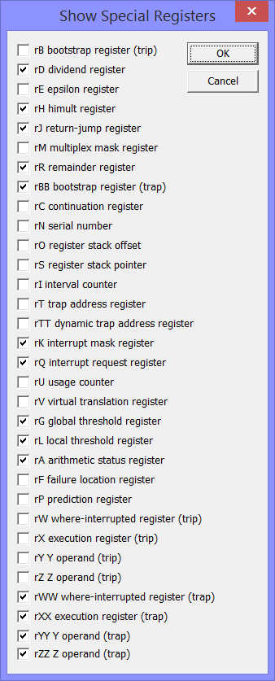

The MMIX Debugger Options

You reach the MMIX debugger options through the Options menu.
Inspecting Registers and Memory
In the two boxes on top of the dialog, you can select windows that
should open automatically when you start the debugger.
In the example above, the window showing the local registers and the
register stack will open; further a windows showing the Data Segment
and one showing the Pool Segment. All the other windows, for example
one for the global registers, can be opened manually when needed.
Choosing Special Registers for display
Next to the checkbox for the special registers is a Choose button.
Pressing it opens a dialog where you can choose which registers to
display in the special register window. Depending on the problem you
are trying to debug, some registers may be relevant and others not at
all. Only the registers selected here will be shown in the special
register window.
Customizing Tracing
- Show Trace: If the checkbox is selected, the trace window will open and
a detailed trace of the instructions is printed when the program stops or hits
a tracepoint. Otherwise, the program will run silent.
- Break at Main: If theis checkbox is selected, a breakpoint is
added automaticaly at Main. So it will stop as soon as it
enters the Main program.
- Break after instruction or before instruction: Here you can
select whether the program stops before or after executing the
instruction. This applies to breakpoints as well as to single stepping.
The "classic" behaviour of the MMIX debuger is to
stop after the instruction, so that you can see in the trace
what the instruction just has done.
Other source code debuggers (for example gdb) usualy stop
before executing the instruction. This has the advantage, that you can inspect registers and memory before the instruction, that advance the program to the next instruction and see the changes. It can also be convenient to stop at a branch instruction before it gets executet and then see where it will take the machine.